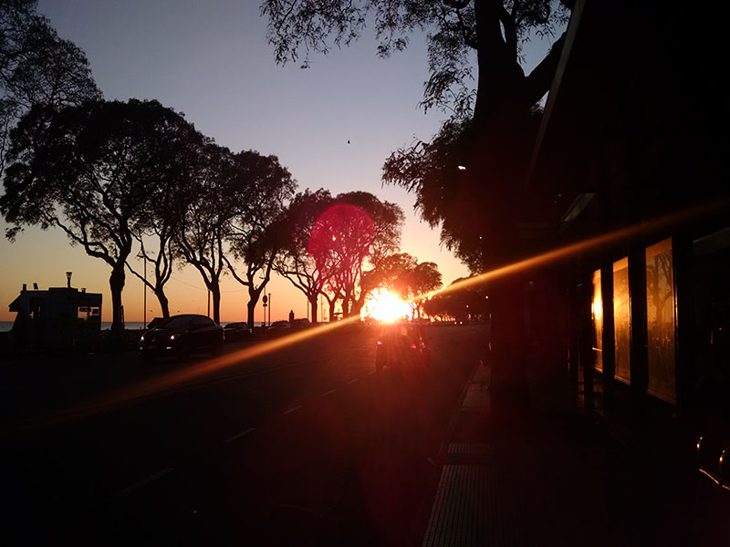
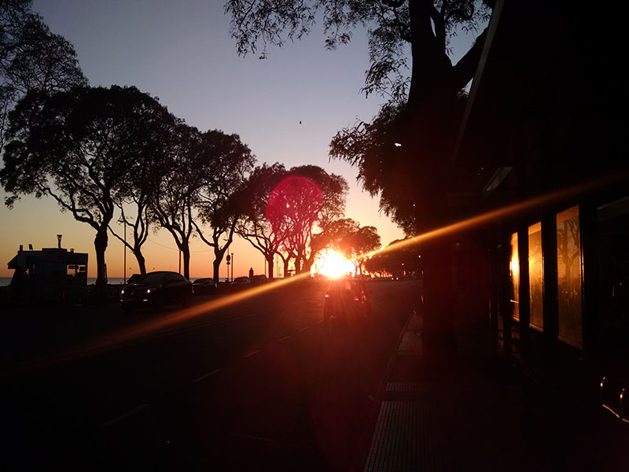

- home
- place
- local_airport
- call
Elige tus proximas vacaiones


 


Teatro Colón de Buenos Aires
date_range 12 de Enero de 2018add_location Buenos Aires, Argentina
El Teatro Colón es un teatro de ópera de la ciudad de Buenos Aires. Por su tamaño, acústica1 y trayectoria, está considerado uno de los cinco mejores del mundo.2 Según una encuesta realizada por el experto en acústica Leo Beranek a destacados directores internacionales de ópera y de orquesta, el Teatro Colón posee la sala con la mejor acústica para ópera y la segunda mejor para conciertos del mundo.
Comparable con las salas líricas más importantes del mundo, como la Scala de Milán, la Metropolitan Opera House de New York, la Ópera Estatal de Viena, la Royal Opera House (Covent Garden) de Londres y la Ópera de París, es índice inequívoco de consagración para quienes se presentan en él y lugar ineludible para los amantes de la música. El Colón ha sido desde siempre un teatro venerado por el público y por los artistas más renombrados.4 A su vez, es sede de la Orquesta Estable, el Coro Estable, el Ballet Estable del Teatro Colón y de la Orquesta Filarmónica de Buenos Aires. También funcionan en su sede el Centro de Experimentación del Teatro Colón, el Instituto Superior de Arte, con su Orquesta Académica, el Coro de Niños y el programa Colón Contemporáneo.
Conociendo al autor del Blog
Mi nombre es Andrew McMillam tengo 35 años, ¿de donde? si bien nacido en Buenos Aires, Argentina. Pero hara cosa de 10 años que no tengo un domicilio establecido, ya que cansado de la rutina me dedique a viajar primero empesando por los paises limitrofes como ser Uruguay, Paraguay, Chile, Bolivia y Brasil. Todo empezo con la idea de conocer nuevos lugares y cada vez mas el vicio de viajgar se me adentraba asi que empce a vijar cada vez a mayor distancia de Argentina y cada vez por mas tiempo.
Luego de viajar por tantas partes del mundo, conocer tanta gente de diferentes culturas y de diferentes comportamientos, pero todas confluian en algo a la hora de viajar todos querian tener la mayor información de donde ivan o por lo menos saber que lugares se podria adaptar mas a sus gustos y personalidades dado por esto que decidi crear este Blog.
El Puente de la Mujer (Puerto Madero)
date_range 10 de Enero de 2018add_location Buenos Aires, Argentina
Se trata de un puente peatonal de 170 m de largo y 6,20 m de ancho dividido en tres secciones: dos fijas en ambas márgenes del dique y una móvil que gira sobre un pilón cónico de hormigón blanco y permite en menos de dos minutos el paso de embarcaciones. Esta sección central está sostenida por una aguja de acero con alma de cemento de unos 39 m de altura. La aguja está dispuesta en diagonal y de ella penden, a modo de puente colgante, los cables que soportan el tramo que gira.
Su peso es de 800 toneladas. Posee dos tramos fijos laterales de 25 y 32,50 m y un tramo central colgante y rotatorio de 102,50 m. Para accionar el giro de éste se cuenta con un sistema de computación situado al este del puente